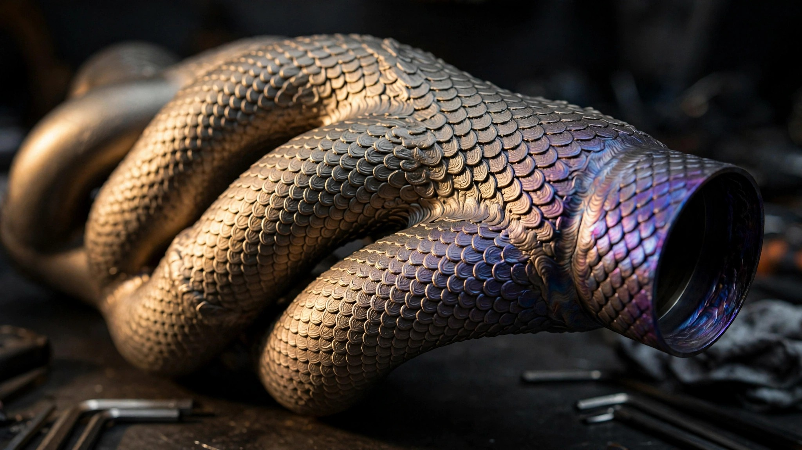

One Hundred Twenty-Three Hours of Laser Light: The TA15 Titanium Exhaust That Could Not Be Welded
Apollo Automobil's Evo hypercar carries what may be the largest single-piece laser-sintered titanium exhaust ever produced. Built from aerospace-grade TA15 alloy over five continuous days, the Dragon Skin system exists because no welder, mandrel, or forming die could produce its geometry. The material science behind it explains why.

A Problem That Starts with Packaging
Apollo Automobil sits in an odd corner of the hypercar world, occupying a space between bespoke coachbuilder and track-weapon laboratory. Founded as Gumpert Sportwagenmanufaktur in 2004 by Roland Gumpert, the former director of Audi Sport during its Group B rally dominance, the company went bankrupt in 2013, reconstituted in 2016, and reemerged with the Intensa Emozione in 2017, building ten cars at $2.5 million each that sold out immediately. Now comes the Evo, track-only, ten units again, priced north of $4 million, carrying a fabrication problem that no shop could solve by conventional means.
At the Evo's center sits a Ferrari-derived 6.3-liter F140 V12 producing 800 horsepower and 765 Nm of torque, spinning to 8,500 rpm through a six-speed sequential gearbox. Packaging this engine inside a carbon fiber monocoque weighing 165 kg (15 percent stiffer and 10 percent lighter than the IE's tub) leaves almost no room for exhaust routing. A naturally aspirated V12 at 8,500 rpm demands smooth, equal-length primaries to scavenge efficiently. Twelve cylinders, twelve primary tubes, merging into collectors, then into a final outlet, all threaded through a space defined by monocoque walls, rear subframe mounting points, gearbox housing, and a deployable rear wing mechanism that generates over 1,300 kg of downforce at 320 km/h.
Build this from hand-bent titanium tube and you get a fabrication nightmare. Pie-cut tubes, dozens of TIG welds, each one a potential crack initiation site under the thermal cycling that a high-revving V12 inflicts on its exhaust. Every weld joint introduces a heat-affected zone where the alloy's microstructure coarsens, weakening the surrounding material. With ten cars to build and the kind of routing geometry that requires compound curves through tight clearances, conventional fabrication becomes both unreliable and uneconomical. Apollo needed a different approach entirely.
Why TA15 and Not Ti-6Al-4V
Most people who know anything about titanium in motorsport know Ti-6Al-4V, the workhorse alpha-beta alloy that accounts for roughly half of all titanium shipped worldwide and shows up on every aftermarket Ducati muffler and GT3 car header on earth. Grade 5, as it's commonly called: strong, light, well understood, and almost certainly what you're touching if you've ever handled a titanium exhaust component.
Apollo chose TA15 instead, and that choice is not a casual substitution.
TA15, formally Ti-6.5Al-2Zr-1Mo-1V, is a near-alpha titanium alloy developed for Chinese aerospace applications, specifically for load-bearing airframe structures that operate at sustained elevated temperatures between 400°C and 500°C. Its composition tells the story: 6.5 percent aluminum (an alpha-phase stabilizer that provides solid-solution strengthening), 2 percent zirconium (a neutral element that refines grain structure and improves creep resistance without destabilizing the alpha phase), 1 percent molybdenum, and 1 percent vanadium (both beta-stabilizers added in small quantities to improve hot workability and ductility without converting the alloy into a dual-phase material).
| Property | Ti-6Al-4V (Grade 5) | TA15 (Ti-6.5Al-2Zr-1Mo-1V) |
|---|---|---|
| Classification | Alpha-beta | Near-alpha |
| UTS at room temp | ~950 MPa | ~960 MPa |
| Max service temp (continuous) | ~315°C | ~500°C |
| Beta-transus | ~995°C | ~985°C |
| Creep resistance at 400°C | Moderate | Superior |
| Weldability | Good | Good (near-alpha benefit) |
At room temperature, the two alloys are nearly identical in tensile strength. At 400°C and above, they diverge sharply. Ti-6Al-4V starts to creep, its beta-phase grains allowing dislocations to move under sustained load at temperature. TA15's predominantly alpha microstructure resists this. Alpha titanium has a hexagonal close-packed crystal structure, which presents fewer slip systems than the body-centered cubic structure of beta titanium. Fewer slip systems means fewer paths for dislocations to propagate under stress, which means higher creep resistance at temperature.
An exhaust manifold bolted to a V12 making 800 horsepower lives in exactly this thermal regime. Exhaust gas temperatures routinely exceed 900°C at the port exit and remain above 400°C along significant portions of the downstream system. Conventional Grade 5 titanium will survive, but it will slowly deform over thousands of thermal cycles at these temperatures, particularly at stress concentration points where tubes merge or mounting brackets attach. TA15 was designed to resist exactly this failure mode.
123 Hours in the Powder Bed
Laser powder bed fusion, sometimes called selective laser sintering or selective laser melting depending on the process parameters, builds metal components by spreading thin layers of alloy powder and selectively melting each layer with a focused laser beam. For TA15, this typically means a powder particle size of 15 to 53 microns, layer thicknesses of 30 to 60 microns, and laser power in the 150 to 190 watt range scanning at 800 to 1,200 mm/s.
Each layer fuses to the one below it, producing a monolithic structure with no welding seams, no joints, and no heat-affected zones anywhere in the component. For a part with complex internal routing, this is the critical advantage: passages that would require impossible mandrel bends in conventional tube fabrication simply exist as negative space within the build volume, defined entirely in software and executed by the laser without regard for the geometric limitations that constrain hand fabrication. Apollo credits Design for Additive Manufacturing (DfAM) principles for a geometry that, in their words, "conventional fabrication methods could not replicate."
One hundred twenty-three hours, just over five days of continuous laser operation, is not fast by any production standard. Czinger's Divergent Adaptive Production System runs twelve simultaneous 1-kilowatt lasers on Nikon SLM Solutions NXG XII 600 machines and still measures complex builds in days, not hours. But Apollo is building ten units, not ten thousand, and at that production volume, tooling costs dominate the equation entirely. A set of hydroforming dies for a complex titanium exhaust manifold would cost more than the entire print run. Additive manufacturing inverts the economics: zero tooling, high per-unit time, acceptable total cost when volume is measured in single digits.
Dragon Skin Is Not Decoration
Look at the exhaust and the first thing you see is texture: scale-like surface features covering the exterior of the system, lending it the reptilian appearance that Apollo leans into with its dragon-themed naming convention, where each of the ten Evo units carries a unique dragon name and its exhaust colorway matches. Marketing, certainly, but the scales serve a thermal function that marketing alone would not bother to engineer.
A smooth cylinder radiates heat according to its surface area. A textured cylinder, with the same outer diameter, has a larger effective surface area due to the fins and valleys of its texture. More surface area means more radiative and convective heat transfer to the surrounding air. In a mid-engine hypercar where the exhaust system threads through a space bounded by carbon fiber structures with resin matrix glass transition temperatures well below 200°C, getting heat out of the exhaust and into the airstream quickly is not optional. It is structural necessity.
Additive manufacturing makes this trivial. Adding surface texture to a laser-sintered part requires only a change to the build file. No additional tooling, no secondary machining, no cost penalty. In conventional fabrication, texturing a titanium exhaust would require chemical etching, mechanical stamping with custom dies, or hand finishing, each adding significant cost and process complexity. In L-PBF, the texture is simply part of the geometry.
Over the textured titanium sits a ceramic thermal barrier coating rated to 1,000°C. Apollo offers this coating in multiple colors, again matching each car's dragon theme. Ceramic coatings on exhaust systems are not new. Turbine blades in jet engines have used yttria-stabilized zirconia thermal barrier coatings for decades. In automotive applications, they serve a dual purpose: protecting the titanium substrate from oxidation at peak temperatures, and reflecting radiant heat back into the exhaust stream to maintain gas velocity and improve scavenging. A faster-moving exhaust column pulls harder on the next charge entering the combustion chamber.
Heat Tinting as Patina
One detail that several sources covering the Goodwood Festival of Speed debut noted: the natural titanium underneath the ceramic coating will change color over time as the metal forms thin oxide layers in response to heat, producing interference colors that depend on oxide thickness. Light straw at 290°C, gold at 370°C, blue at 460°C, violet at 540°C, each color permanent, cumulative, and unique to the thermal history of that particular car.
This is not a flaw but metallurgy performing as visual record. Every track session writes itself into the surface, with areas closest to the exhaust ports developing deeper blues and violets first while cooler downstream sections progress through gold and straw over many sessions, so that no two exhausts will ever look the same because no two cars will be driven identically.
Watchmakers call this patina. Car people call it character. Materials scientists call it thin-film interference on a growing oxide layer. Whatever the name, it represents something rare in modern manufacturing: a component that becomes more visually complex through use rather than degrading.
What This Means Beyond Ten Cars
Apollo will sell ten Evos. That is not going to reshape the automotive supply chain. What matters is the proof of concept. A 123-hour laser-sintered TA15 titanium exhaust system is the largest single-piece printed exhaust ever produced, according to Apollo, and it demonstrates that additive manufacturing has reached a scale where entire functional subsystems, not just brackets and fittings, can be printed as monolithic structures.
Czinger has already supplied 3D-printed chassis and suspension components to Bugatti for the Tourbillon and to McLaren for the W1. APWORKS, an Airbus subsidiary, printed titanium exhaust tailpipes for the Bugatti Chiron Pur Sport. Koenigsegg has used printed variable turbo housings and titanium exhaust tips since the One:1. Each of these was a component, a single part within a larger conventionally fabricated assembly.
Apollo printed the entire system: twelve primaries, collectors, outlet, mounting interfaces, and thermal management texturing, all as one piece with no welds to crack, no joints to leak, and no fasteners to vibrate loose under the relentless thermal cycling of a high-revving V12. Every join in a fabricated assembly is a potential failure point, and this exhaust has none.
Whether the economics will ever work at larger production volumes depends on print speed, which is improving but still slow relative to conventional fabrication. A stamped steel exhaust manifold for a mass-market car takes minutes to produce. But for vehicles built in quantities of ten, or a hundred, or even a thousand, the calculus has already tipped. Zero tooling cost, design freedom unconstrained by forming limits, and material properties optimized at the alloy level for the specific thermal environment of the application. TA15 in an exhaust manifold is overkill for a Honda Civic. For a naturally aspirated V12 turning 9,000 rpm inside a carbon fiber shell, it is precisely the right material in precisely the right form, made by the only process that could produce the geometry.
Roland Gumpert built cars that set lap records at the Nürburgring, survived bankruptcy, and came back to build machines that generate more downforce than they weigh. His company's exhaust system spends five days growing inside a bed of metal powder, emerging as a single sculpture that no fabricator's hands could replicate, from an alloy chosen because it refuses to creep at temperatures that would slowly deform the titanium grade everyone else uses. Five days, one piece, ten cars. That is what additive manufacturing looks like when someone decides to use it not for prototyping, but for the final part.